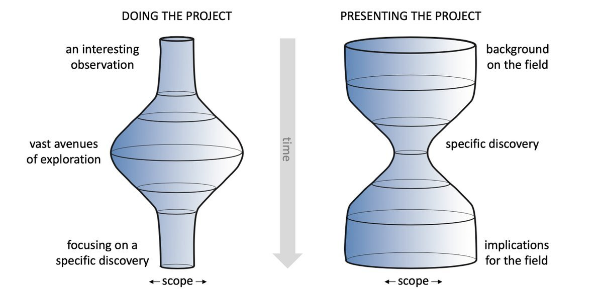
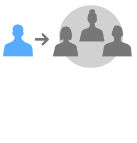
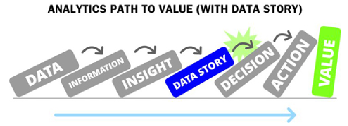
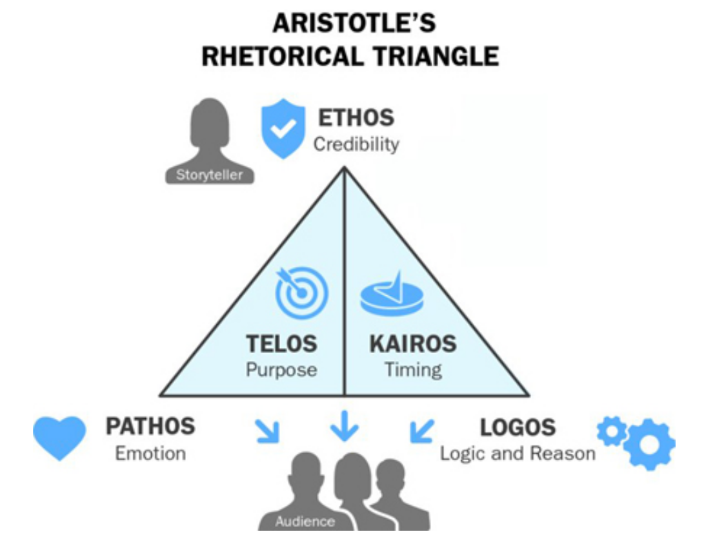

W#08 Insights and Main Insight
Today
Three class room tasks (Building on Week #07 Preparations)
- Audience specification for your Data Story
- Insights to communicate and prioritizing a candidate for the main insight
- Narrative summary. It is helpful to work on a summary already at an early stage.
Check: Which Data Story Teams are here today?
Where to work today: Use the README.md in your repository to take notes.
All Data Story Repos are listed in the private repo Course-Organization-Resources.
Add a line
## Drafting: Audience, Insights, Summary
at the end of README.md (Alternative: Create a DRAFT.md in the repo.)
Doing vs. Presenting Projects

Lesson: Time spend on doing parts of a project \(\neq\) Time spend on present these parts
Milestones: From 2 to 3
2 Main insight 💡
Target Achievements:
- Target audience described
- List of 3-6 (depending on team size) insights drafted in your report
- Prioritized what will be the main insights
3 Visual Drafts 📊📈📉️
Target Achievements:
- For each insight
- a visuals drafted in the report or the presentation (a draft can be a first coded visual, or even photo of a sketch on paper)
- notes and ideas for the final version
Data Literacy
Definition: The ability to understand and communicate data.
Challenge for the Data Story
- Bring your main insights across to an audience with low and intermediate data literacy!
- Second order challenge: The audience of our class has high data literacy (hopefully). Nevertheless present it the simple way in class! Do not make it sophisticated and hard to understand to look competent!
What is an insight?
Etymology: “inner sight” or “ sight with the ‘eyes’ of the mind”
A Definition: an unexpected shift in the way we understand things
Let us not overdo it!
- The insight need not be brand new.
- It also does not need to be unexpected.
- Beware: “Everything is obvious once you know the answer, but only for you!”
Pragmatic interpretation:
- Presenting insights is your presenter attitude.
- Present with the mindset that you can trigger interesting and important insights in your audience.
1. Your Audience
Which perspective of communication shall the project have?
You can communicate to the audience from the position of an
Insider

Outsider
What is the story telling position in your project?
Path to value

Think about a potential role your project report could have for your audience.
Audience - Persona method
Audience of your Data Story: The people you imagine to view your presentation.
We use the persona method:
Instead of designing for “users aged 25-40,” you design for “Sarah, a 32-year-old marketing manager who commutes 90 minutes daily and needs to manage projects on her phone.” The persona method comes from Design thinking. Personas help to empathize with users by giving abstract data a human face.
Example Persona for the Data Story CoViD Pandemic and Summerbreaks.
- A 40-year old father who is wondering if all these CoViD safety measures in the school of his daughter had to suffer were worth it.
- A newly employed 30-year old public health care service officer collecting various piece of evidence how prevention measures work in practice.
- …
Audience - Activity
Individual work in your Team:
- Describe three personas in your audience.
- Answer for example:
- Who are they?
- Why are they interested?
- What is their connection to the topic?
In class: Describe one individual.
2. Insights
Listing insights
As bullet points.
Example for Data Story CoViD Pandemic and Summerbreaks.
- COVID cases started to increase slowly already in summer!
- Differences in vacation time provide an opportunity to distinguish general and vacation trend
- Cases tend to increase more than the general trend during summer break
- …
Task 1: List Insights
What can be main insights of your Data Story?
Activity in your Team:
List 3 potential insights. If your team has more than 3 members list at least one for each member.
Team size 1-3 \(\to\) >3 insights
Team size 4 \(\to\) >4 insights
Team size 5 \(\to\) >5 insights
(It’s okay if the insights are uncertain for now because you do not know yet)
Next: Activity: In groups of teams
Task 2: Prioritize Main Insight
Discuss and select main insight of your Data Story?
Activity: In groups of teams
- Go through the insight in your group and
- Are they clear? Which insights are missing?
- Select a tentative main insight
Role of other project members: Ask questions
- What is important to know as an outsider?
- What is most interesting as main insight? Why?
In class: Some spotlights on discussed main insights in Data Stories
3. Summary
Rhetoric Perspectives

Task: Short Version of Story
Task 1: One Sentence
Write a one-sentence version of the abstract which contains the main point of your report.
Example for the Data Story CoViD Pandemic and Summerbreaks:
School holidays and summer vacation made the spread of CoViD19 faster, probably because prevention measures at school and in the work place worked better than those for leisure activites and those taken with relatives and friends.
In class: Read out the one sentence summaries.
Task 2: Abstract
Write a short version of your story in the format of an abstract (6-7 sentences, 150-200 words)
Example Abstract for the Data Story CoViD Pandemic and Summerbreaks on the website.

MDSSB: Visual Communication and Data Storytelling